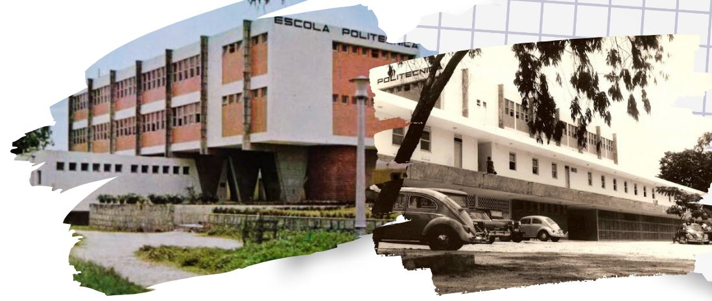
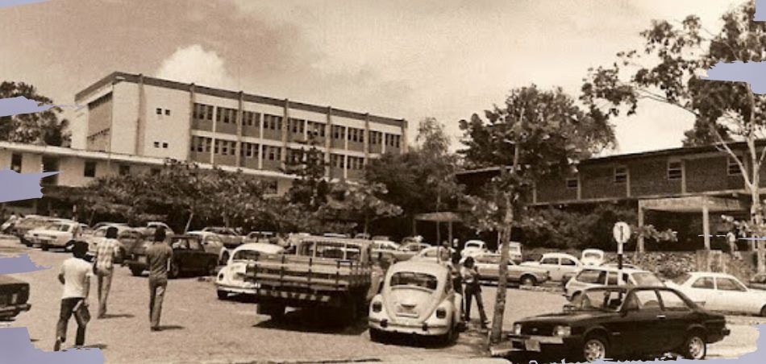

Unidade Acadêmica de
Letras
Campina Grande · Paraíba
Acesso rápido
Coordenação Administrativa da UAL/CH
Administração executiva da Unidade Acadêmica de Letras
Coordenação: Profa. Isis Milreu · Secretaria: Nilmara e Israel
Coordenação de Graduação em Letras — CGLET/CH
Coordenações e secretaria dos cursos de graduação da UAL/CH
Cursos de graduação
Cada curso tem página própria, com documentos, coordenação e corpo docente
Secretaria: Marciano e Levi
A CGLET
História da Coordenação de Graduação em Letras

A história da formação em Letras na Universidade Federal de Campina Grande remonta a 1978, período anterior à própria criação da Universidade, quando esta ainda era o Campus II da Universidade Federal da Paraíba. Naquele ano, foi fundado o Departamento de Educação e Humanidades, com o objetivo inicial de atender às demandas de disciplinas do Ciclo Básico e, posteriormente, do curso de Pedagogia.
O marco inicial da graduação ocorreu em 17 de janeiro de 1980, quando o Conselho Superior de Ensino, Pesquisa e Extensão da UFPB, através da Resolução nº 23/80, autorizou o funcionamento do Curso de Licenciatura Plena em Letras. O curso iniciou suas atividades com o primeiro vestibular naquele mesmo ano, ofertando 40 vagas para as habilitações em Vernáculo (Português) e Línguas Estrangeiras (Inglês e Francês). O reconhecimento oficial pelo Ministério da Educação veio em 8 de março de 1984, através da Portaria nº 90/84.
Ao longo das décadas de 1980 e 1990, o curso consolidou-se como um dos mais concorridos da área de Humanidades, passando por reformulações curriculares importantes em 1988 e 1994, que visavam fortalecer a relação entre teoria, prática e pesquisa. Em 1998, houve a expansão para o turno noturno e uma primeira tentativa de implementação da Licenciatura em Espanhol, que funcionou até 2002.
Com o desmembramento da UFPB e a criação da Universidade Federal de Campina Grande em abril de 2002, o antigo Departamento de Letras transformou-se na atual Unidade Acadêmica de Letras.
Uma mudança estrutural decisiva ocorreu a partir de 2011, quando o antigo "Curso de Letras" com suas habilitações foi desmembrado, dando origem a cursos de graduação autônomos e específicos para cada língua. Esse processo de reestruturação permitiu a criação de Projetos Pedagógicos de Curso próprios para Língua Portuguesa, Língua Inglesa, Língua Francesa e Língua Espanhola, além da posterior criação do curso de Libras.

Coordenação dos Programas de Monitoria da UAL/CH
Setor responsável pela seleção e pelo acompanhamento dos monitores da unidade
Coordenação: Profa. Marcelle Ventura Carvalho
Central de Línguas Estrangeiras
Setor da UAL/CH responsável pelo exame de proficiência em leitura e pelos cursos de línguas abertos à comunidade
Secretaria: Veralucia
Coordenação de Pesquisa e Extensão
Setor responsável pelos projetos de pesquisa e pelas ações de extensão da UAL/CH
Coordenação: Profa. Laura Dourado
PPGLE — Pós-Graduação em Linguagem e Ensino
Programa de pós-graduação da Unidade Acadêmica de Letras
Coordenação: Prof. Suênio Stevenson · Secretaria: Júnior e Edilma · Assistente: Thaynara
Atendimento de Intérpretes de Libras
Interpretação Libras–Português para aulas, reuniões, bancas e eventos da UAL/CH
Coordenação: Intérprete Jailma
Solicitações e agendamento pelo e-mail acima.
Lablibras
Laboratório de Libras da Unidade Acadêmica de Letras
Coordenação: Reinaldo Toscano · Secretaria: Matheus
CALET — Centro Acadêmico de Letras Álvaro Luiz
Entidade representativa máxima dos estudantes dos cursos de Letras da UAL/CH
Contatos
- Coordenação Administrativa da UAL/CH secretariadaual@gmail.com · (83) 2101-5814 · (83) 2101-1221
- Coordenação de Graduação em Letras — CGLET/CH gradletrasual@gmail.com · (83) 2101-1036 — WhatsApp
- Coordenação dos Programas de Monitoria da UAL/CH marcellevcarvalho@gmail.com
- Central de Línguas Estrangeiras proficiencia@setor.ufcg.edu.br · (83) 2101-5816
- Coordenação de Pesquisa e Extensão laura.dourado@professor.ufcg.edu.br
- PPGLE — Pós-Graduação em Linguagem e Ensino secretaria.ppgle@setor.ufcg.edu.br · (83) 2101-1225 · (83) 2101-1566
- Atendimento de Intérpretes de Libras interpretesufcg@gmail.com
- Lablibras lablibras@ufcg.edu.br · (83) 2101-5769
- CALET — Centro Acadêmico de Letras Álvaro Luiz @caletrasufcg · Grupo de WhatsApp